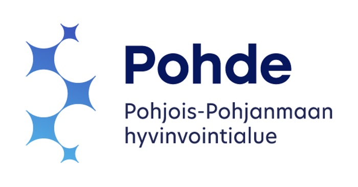
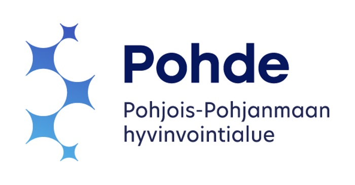

Lisäkoulutukset
Kielellisten taitojen, kerronnan taitojen ja puheen ymmärtämisen haasteiden kuntoutus:
- - Kielellinen erityisvaikeus, 2010
- - Lapsi kertojana- tutkittua tietoa ja käytännön vinkkejä kerronnan arvioinnista ja kuntoutuksesta
- - Kielioppi keskiössä – Näkemyksiä omaksumisesta ja pohdintaa kuntoutuksesta, 2024
- - Puheen ymmärtämisen kuntoutus lapsilla ja nuorilla -workshop, 2018
- - Kuulohahmotus – Miten tutkin ja kuntoutan, 2008, PPSHP
- - Näkökulmia varhaiseen vuorovaikutukseen, 2010, PPSHP
- - Kognitiiviset kuntoutusohjelmat, 2011, ForamenRehab kognitiiviset koulutusohjelmat
Puhemotoriset taidot ja epäselvän puheen kuntoutus:
- - Fonologiatesti: Uusi menetelmä lasten äänteellisen kehityksen arviontiin, 2012, Niilo Mäki Instituutti
- - Miten ja milloin käytän erilaisia välineitä (puhemotoriikan kuntoutuksessa) puheterapian tukena, 2022, Äännekoulu
- - Sensoriset pulmat syömishaasteiden taustalla, -miten arvioin ja kuntoutan, 2022 Äännekoulu
- - Havainnoi, arvioi ja kuntouta epäselvä puhe, 2019, Katjavox
- - Lasten äänteellisten pulmien kuntoutus - seminaari, 2015
- - Lasten puheen kuntoutuksen prosesseja, 2018
- - Äänteistä puhetta – näkökulmia ympäristön ohjaukseen äänteellisessä kuntoutuksessa, 2016
- - Lasten änkytys ja kehityksellinen verbaali dyspraksia, 2007, Kuopion kesäyliopisto
- - Apusanamenetelmäkoulutus Puheen tuoton kuntoutuksessa, 2017
- - Kättä pidempää, - helppojen apuvälineiden käyttö puheen kuntoutuksessa, 2020
- - Puheen motoriset perusvalmiudet, verbaalinen dyspraksia ja sen kuntoutus, 2011, Speela
Neuropsykiatriset häiriöt:
- - Käyttäytymisanalyysin soveltaminen kuntoutuksessa, opetuksessa ja ohjauksessa, 2022, ProNeuron
- - Nepsy – lapsi varhaiskasvatuksessa 5 op, 2022
- - Nepsy – lapsi koulussa, 5 op, 2022
- - Nepsy – nuoren tukeminen, 5 op, 2022
- - Pragmaattisen kommunikaation kuntoutus, 2021
- - Lasten sosiaalisen kommunikaation ja vuorovaikutuksen vaikeudet, 2018, Evantia
- - Kun lapsi ei keskity, 2007, Merikartanon koulu
Puhetta tukevien ja korvaavien kommunikointimenetelmien koulutukset:
- - Tukiviittomakurssi 6.9.–29.11.2005, Oulu Opisto
- - Tukiviittomien tehokurssi, 2018, Evantia
- - Tukiviittomakurssi 2025, HLS Fondo
- - Toimivan kommunikointimateriaalin suunnittelu ja käyttö, 2019, Ruskeasuon koulu
- - Eleet kommunikoinnin tukena, 2012, PPSHP
- - Taike-tauluston koulutus, 2011, Kehitysvammaliitto
- - Vinkkipuheen peruskurssi, 2006, Lapci Ry
Neurologiset sairaudet ja neurologisista syistä johtuvat vammat:
- - Neurologiset häiriöt ja logopediset haasteet, 2007
- - Lasten etenevät neurologiset sairaudet ja puheterapeuttisen kuntoutuksen eettiset kysymykset, 2007, PPSHP
- - Diagnoosikohtaiset koulutuspäivät, 5 päivää, 2008 (sis. Cp-oireet, hemiplegia, spastinen ryhmä, ataksia, atetoosi, monivammaiset ja vaikeavammaiset)
- - Puheen ja nielemisen kuntoutus etenevissä aikuisneurologisissa sairauksissa, 2006, PPSHP
Lukemisen ja kirjoittamisen taitoihin liittyvien haasteiden kuntoutus:
- - Erityispedagogiikan perusopinnot 25 op, Jyväskylän yliopisto, 2019
- - Kasvatustiede 12 op, Jyväskylän yliopisto, 1993
- - Kouluikäisten kuntoutus 5 op, Niilo Mäki Instituutti, 2008
- - Luki-taidot ja vahvuudet huomioon ottava kuntoutus, 2017, Niilo Mäki Instituutti
Syömisen ja nielemisen kuntoutukseen liittyvät koulutukset:
- - Pienten lasten syömisen haasteet sekä aikuisneurologisten asiakkaiden nielemisvaikeudet ja kuntoutus, 2015
- - Apua syömispulmaan – Diagnosointi ja hoitosuunnitelma lapsen syömisterapiassa, 2015
- - Lasten syömisen vaikeuksien arviointi ja kuntoutus, 2016
- - Refluksi lapsilla ja aikuisilla moniammatillisena haasteena, 2022, Suomen Orofakiaalisen terapian yhdistys Soty ry
Puheterapiatyön laadukkaaseen toteuttamiseen liittyviä koulutuksia:
- - Laatuvaatimukset tänään ja laadun jatkuva parantaminen, 2014
- - GAS (Goal Attainment Scaling) – koulutus, 2017, Oulun Ammattikorkeakoulu
- - Suomen puheterapeuttiliitto ry:n Pohjois-Pohjanmaan paikallisosaston järjestämä GAS-työpaja, 2019
- - ICF – luokituksen koulutus, 2016, Oulun Ammattikorkeakoulu
- - Säännölliset ensiapukoulutukset, viimeisin 2024, Uskalla auttaa Oy
Muita koulutuksia:
- - Suomen Ääniergonomiaseuran kolmas symposium, 2024, Suomen Ääniergonomiaseura
- - Leikki – koulutuspäivät, 2007
- - Laulupiirtämisen perusteet, 2022
- - Muksuoppi, 2022, Ben Furman
- - iPad – terapiakäytössä -koulutus, 2014
 
